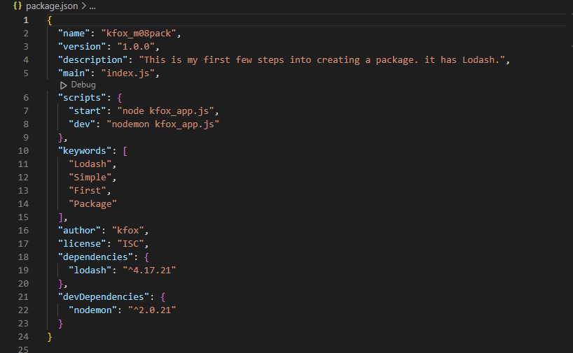
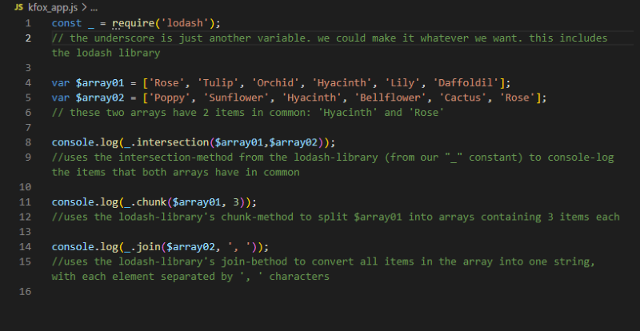
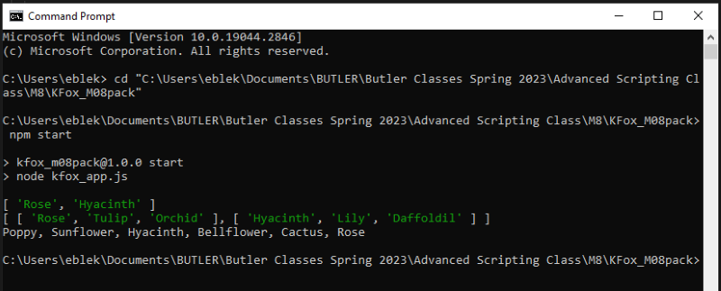

Scripting Exercise with Node.js and NPM Packages
NPM (Node Package Manager) manages Node.js packages, such as http-server and file-system which we used previously. A module simply means an external file that can be used by another file. A Package is a folder tree or a collection of modules described by a package.json file. The package.json tells node.js which modules to install to the project folder.
To create a package we open the console, change the directory to the desired folder, and run the code "npm init". Node.js automatically asks a series of questions (that we can answer or skip) and then it creates a package.json file in the root directory. To add dependencies (such as the Lodash library), we would run "npm i lodash" in the console. This also creates a folder ("node_modules") to store them in the root folder.
This is exactly what we did in this exercise. We also added a dev dependency called nodemon, which lets us run our script every time we save any changes. Additionally, we edited the "scripts" section of our package.json so that we can assign keywords to run code in the console. This is all showcased in the screenshot of our package.json file below.
To make use of our package and its dependencies, we made a quick script, kfox_app.js (pictured below). kfox_app.js creates a couple of arrays, then uses the lodash library to process info from the arrays and console.log the results.
While working on kfox_app.js, nodemon helped us instantly see the output any time we saved changes. Below is a screenshot of the console running our completed script. As you can see, we can run kfox_app.js by entering "npm start" which is one of the keywords we had added to the package.json file.
